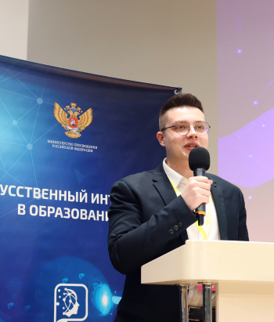

7-8 декабря 2021 года в Москве на базе АНО ВО «Российский новый университет» состоялась международная научно-методическая конференция «Искусственный интеллект в образовании». Мероприятие, прошедшее в рамках Года науки и технологий при поддержке Министерства просвещения Российской Федерации, объединило около 400 участников – педагогов, руководителей школ и вузов, научных экспертов, представителей некоммерческих организаций и бизнеса, занимающегося развитием технологий искусственного интеллекта.
Конференция призвана привлечь внимание к перспективам использования искусственного интеллекта в образовании и развить взаимодействие научного, экспертного, педагогического сообществ и бизнеса в данной сфере. Мероприятия также нацелены на популяризацию российской науки, образования и русского языка. Среди задач конференции – обеспечение широкого доступа к российским научным исследованиям, научным открытиям в сфере искусственного интеллекта.
В рамках конференции прошла серия тематических секций, дискуссионных площадок и круглых столов. Педагоги и эксперты представили передовые разработки по внедрению технологий искусственного интеллекта в современный образовательный процесс. Кроме того, представители региональных школ и вузов, активно внедряющие искусственный интеллект в процесс обучения, поделились собственным опытом. Успешные практики вызвали большой интерес участников и могут стать основой для собственных технологических решений образовательных организаций, делающих ставку на искусственный интеллект и развитие цифровых платформ для повышения эффективности обучения.
Спикерами конференции стали известные эксперты научных организаций, передовых российских и мировых профильных компаний. Так, Владимир Зернов, ректор автономной некоммерческой организации высшего образования «Российский новый университет», выступил с докладом «Искусственный интеллект в образовании 21 века. Пространство для новых возможностей». Искусственный интеллект в цифровой диагностике soft skills представил Андрей Комиссаров, директор Университета 2035 НТИ по направлению «Развитие на основе данных». С приложениями виртуальной и дополненной реальности в образовании ознакомил участников Глеб Власов, руководитель сектора виртуальной и дополненной реальности, научный сотрудник Московского технического университета связи и информатики.
О новых возможностях преподавания иностранных языков на примере учебника РКИ «Привет, Россия!» рассказала Ольга Плотникова, магистр лингвистики, старший преподаватель в НИУ ВШЭ (Москва), создатель сообщества для преподавателей РКИ и портала «RKI.today», автор учебников «Привет, Россия», и «Русский язык сегодня», автор и разработчик первого в РКИ мобильного приложения «Learn&Go». Начальник Центра довузовской подготовки и профориентационной работы «Тверского государственного медицинского университета» Минздрава РФ, канд.хим.наук, доцент, член Президиума и председатель Тверского регионального отделения Ассоциации учителей и преподавателей химии России Александр Соболев представил опыт применения искусственного интеллекта при обучении химии.
В рамках второго дня конференции прошла серия круглых столов. Так, последние тенденции в области искусственного интеллекта и влияние этих тенденций на образование рассматривались в ходе круглого стола «Современная школа с искусственным интеллектом: варианты использования», проведенного Дианой Минец, учителем русского языка и литературы школы № 1561 (Москва), призера Всероссийского конкурса «Учитель года – 2020». В ходе круглого стола «Цифровой след в образовании, образовательный дата-инжиниринг и новая цифровая реальность» модератор Андрей Комиссаров предложил участникам обсудить вопросы разработки коллективного человеко-машинного интеллекта.
Руководитель Центра компетенций «Искусственный интеллект» НТИ, управляющий директор Центра компетенций «Кадры для цифровой экономики» Университета 20.35 НТИ, член Экспертного совета Государственной Думы по цифровой экономике и блокчейн-технологиям, член Совета Федерации по цифровой экономике Надежда Сурова провела круглый стол «Искусственный интеллект в современном образовании». Искусственный интеллект как необходимое условие построения сквозных образовательных траекторий стал темой круглого стола, проведенного Натальей Шадриной, руководителем по работе с регионами Обрсоюза, экспертом Национального союза педагогов.
Конференция стала одним из продуктивных векторов развития сотрудничества научных, педагогических работников из стран СНГ, дальнего зарубежья и бизнеса, занимающегося разработками в сфере искусственного интеллекта. Мероприятие также помогло представить исследования и открытия российских ученых в сфере внедрения искусственного интеллекта. Работа площадки способствовала активизации профессионального обмена в области использования технологий искусственного интеллекта для решения задач системы образования, отметили участники.
С материалами конференции можно ознакомиться на официальном сайте ai2021.education. На портале также представлены записи выступлений участников мероприятия.